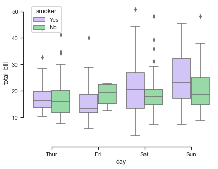
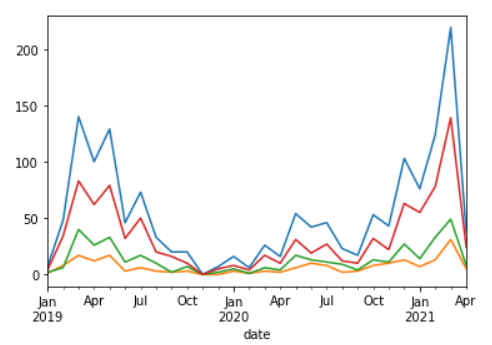
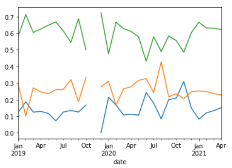
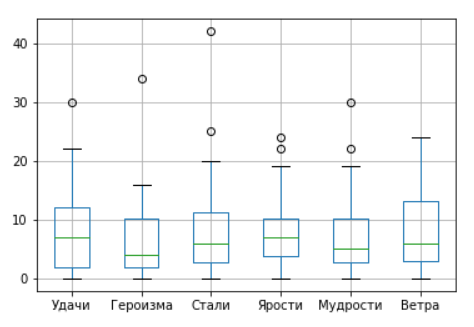
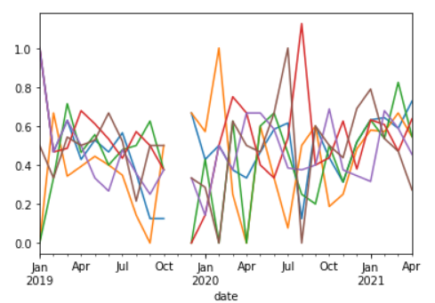

Приветствую читающих данную заметку.
После введения в аукционный оборот печатей (редких и легендарных), ожидаемо возросла активность игроков на событиях за городом – правда, жучил еще не победили, но все к этому идет. Так же пошли слухи о том, что Rewad подкрутил вероятности выпадения Редких и Легендарных печатей в сторону снижения вероятности их появления, а также снизил вероятность выпадения полезных печатей вида “Удача”, “Мудрость”. Было принято решения расчехлить базу данных Аватариума и проверить правдивость слухов. Ну и заодно посчитать некоторую статистику по печатям.
Итак, на проверку:
- Изменение вероятностей выпадения печатей (градация силы)
- Изменение вероятностей выпадения печатей (тип печати)
- Повышение активности игроков на общих событиях за городом
При расчетах использовали данные за 2+ года игры с перерывом на 1 месяц в середине срока.
Результаты

Всего печатей
Как видно из графика, суммарное количество печатей в последние месяцы рассматриваемого периода выросло почти в 2 раза. В 2020 году была устойчивая стагнация, игроки почти не ходили на события, но после вывода печатей на аукцион игроки взялись за события с утроенной силой. Но что с относительными значениями? Может за 1 событие стало меньше падать печатей?

Шансы выпадения печатей
Судя по всему шансы выпадения печатей (Редких, Легендарных, Обычных) не изменились. На текущий момент распределение печатей на событии следующее:
- Обычные: 60%
- Редкие: 26%
- Легендарные: 14%
- В среднем падает за 1 событие 3.5 печати.
То есть если выпадет 10 печатей, то 6 из них будут Обычными, 3 Редкими и 1 Легендарная.

Всего печатей по типам
С большой вероятностью какого-либо предпочтения сервера игры к печатям определенного типа не существует. В среднем каждый из типов встречается одинаково часто за 27 месяцев.

Относительное количество печатей по типам
Есть аномалии в середине прошлого года, скорее всего связаны с небольшим количеством наблюдений. В последних месяцах меньше шума в данных, так как люди стали чаще фармить печати. Корреляция Пирсона с расчетом p-value утверждает, что тут полный рандом и подтасовки нет. По крайней мере на протяжении всех 27 месяцев наблюдений (корреляция в районе 90+% и p-value -> 0)
Выводы
- Шанс получить Редкие и Легендарные печати не изменился со временем. За 1 событие игроки в среднем получают 3.5 печати, из них:
- Обычные: 60%
- Редкие: 26%
- Легендарные: 14%
- Тип печати не влияет на шанс её получения. То есть мерзкие печати ярости и шикарные печати удачи падают одинаково часто.
- Вывод печатей на аукцион повысил привлекательность событий за городом почти в 3 раза.